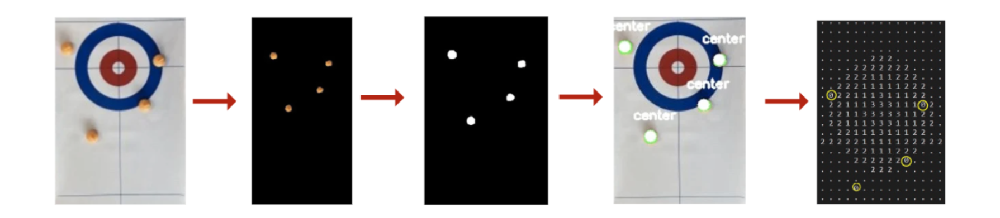

As an engineering science student at UofT Engineering, I have had the privilege of working on three captivating design projects. Through these experiences, I have been able to demonstrate my expertise, foster creativity, and gain valuable insights into the world of innovative product design.
The projects I have worked on include:
During my Praxis II course project at UofT Engineering Science, my team (Joey, Kevin, Ria, Alice, and I) developed an innovative device to enable blind individuals to participate in curling independently. The device empowers blind curlers to learn and practice the sport without the need for a sighted guide. It incorporates four key components: an input camera above the curling sheet to capture images, a stone detection system using OpenCV software to translate these images into stone coordinates, an audio output through a loudspeaker to convey the stone's location, and a tactile map remote for target selection. With real-time feedback on shot types and stone positions, our solution makes curling more accessible and enjoyable for the blind community, fostering greater inclusivity in the game.

.